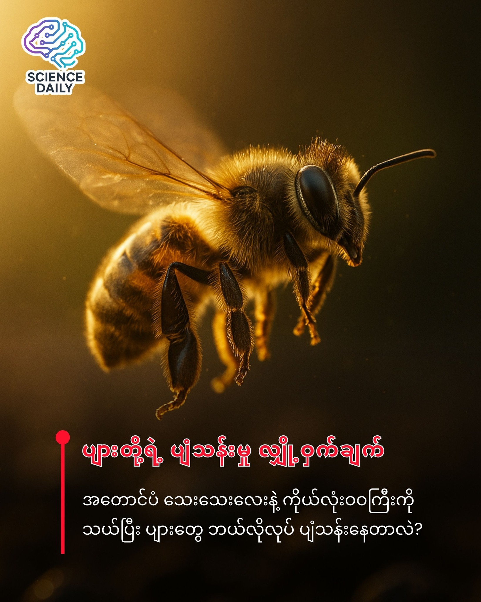

How Bee Fly
ပျားတွေက ရူပဗေဒသဘောတရားအရ တကယ်ပဲ ပျံသန်းလို့ မရဘူးလား?

ပျားတွေက ရူပဗေဒသဘောတရားအရ တကယ်ပဲ ပျံသန်းလို့ မရဘူးလား?
Bee Movie ရုပ်ရှင်ကားရဲ့ အစမှာ ပြောသွားတဲ့ စကားတစ်ခွန်းကို မှတ်မိကြဦးမလား။ "လေကြောင်းပျံသန်းမှုဆိုင်ရာ ဥပဒေသတွေအရ ပျားတစ်ကောင်ဟာ ပျံသန်းနိုင်ဖို့ လုံးဝ မဖြစ်နိုင်ပါဘူး။ သူတို့ရဲ့ အတောင်ပံလေးတွေက သေးလွန်းပြီး ဝဝကစ်ကစ် ကိုယ်လုံးလေးကို မြေကြီးပေါ်ကနေ ကြွတက်နိုင်အောင် မစွမ်းဆောင်နိုင်ပါဘူး" တဲ့။ ဒါပေမဲ့ တကယ့်လက်တွေ့မှာတော့ ပျားတွေက ပျံနေကြတာပါပဲ။ ဒါဆို ဘာတွေလွဲနေတာလဲ?
ကနဦး နောက်ခံအကြောင်းအရင်း
ဒီအယူအဆက ဒီနေ့ခေတ်မှ ပေါ်လာတာ မဟုတ်ပါဘူး။ ပျားတွေရဲ့ ခန္ဓာကိုယ် တည်ဆောက်ပုံကို ကြည့်ပြီး "ဒီကောင်လေးတွေ ဘယ်လိုလုပ် ပျံနိုင်မလဲ" ဆိုတဲ့ မေးခွန်းက ပညာရှင်တွေကို နှစ်ပေါင်းများစွာ ခေါင်းစားစေခဲ့ပါတယ်။
သာမန်မျက်စိနဲ့ ကြည့်မယ်ဆိုရင်လည်း ပျားတွေရဲ့ ကိုယ်လုံးက လေးလံပုံပေါက်ပြီး အတောင်ပံက ပါးပါးသေးသေးလေးတွေ ဖြစ်နေတာကိုး။ ရူပဗေဒ (Physics) သဘောတရားအရဆိုရင် ဒီလိုအချိုးအစားနဲ့ ပျံသန်းဖို့ မဖြစ်နိုင်ဘူးလို့ လူတွေ ယုံကြည်ခဲ့ကြတာ အဆန်းတော့ မဟုတ်ပါဘူး။
ဖြစ်ရပ်မှန် သမိုင်းကြောင်း
ဒီဒဏ္ဍာရီ ဘယ်က စသလဲဆိုတော့ ၁၉၃၀ ပြည့်လွန်နှစ်တွေလောက်ကပါ။ ဇာတ်လမ်းပုံစံအမျိုးမျိုး ရှိပေမယ့် အခိုင်မာဆုံးကတော့ ပြင်သစ်သတ္တဗေဒပညာရှင် Antoine Magnan နဲ့ သက်ဆိုင်နေပါတယ်။
Magnan နဲ့ သူ့ရဲ့ လက်ထောက်သင်္ချာပညာရှင် André Sainte-Laguë တို့ဟာ အင်းဆက်တွေရဲ့ ပျံသန်းမှုကို တွက်ချက်ကြည့်ကြတယ်။ ပြဿနာက ဘာလဲဆိုတော့ သူတို့ဟာ လေယာဉ်ပျံသန်းမှုဆိုင်ရာ သီအိုရီ (Fixed-wing Aircraft Theory) တွေကို သုံးပြီး ပျားတွေကို တွက်ချက်လိုက်မိတာပါ။
လေယာဉ်ပျံတစ်ခုလိုမျိုး တောင့်တင်းတဲ့ အတောင်ပံ (Rigid wings) တွေနဲ့ တွက်ကြည့်လိုက်တဲ့အခါ ပျားတွေရဲ့ အလေးချိန်နဲ့ အတောင်ပံဧရိယာ အချိုးအစားအရ "ပျံသန်းဖို့ မဖြစ်နိုင်ဘူး (Flight is impossible)" ဆိုတဲ့ အဖြေ ထွက်လာခဲ့ပါတယ်။ ဒီကနေတဆင့် "ပျားတွေက ရူပဗေဒစည်းမျဉ်းကို ဖောက်ဖျက်ပြီး ပျံသန်းနေတယ်" ဆိုတဲ့ ကောလာဟလကြီး ကြီးထွားလာခဲ့တာပါ။
သိပ္ပံပညာရဲ့ တွေ့ရှိချက်အသစ် (The Discovery)
တကယ်တမ်းကျတော့ ပျားတွေက ရူပဗေဒကို ဖောက်ဖျက်တာ မဟုတ်ပါဘူး။ ကျွန်တော်တို့ရဲ့ တွက်ချက်မှုပုံစံ မှားယွင်းခဲ့တာပါ။
နောက်ပိုင်းမှာ သိပ္ပံပညာရှင်တွေက ပျားတွေရဲ့ ပျံသန်းမှုကို အသေအချာ ပြန်လည်လေ့လာခဲ့ကြပါတယ်။ (Arizona State University ရဲ့ လေ့လာချက်တွေအရပေါ့)။
အတောင်ပံ အနေအထား: ပျားတွေရဲ့ အတောင်ပံက လေယာဉ်ပျံလို တောင့်တင်းမနေပါဘူး။ ပျော့ပျောင်းပြီး လိမ်လို့ (Twist) ရသလို၊ လည်လို့ (Rotate) လည်း ရပါတယ်။
ရိုက်ခတ်နှုန်း: ပျားတွေဟာ သူတို့ရဲ့ အတောင်ပံကို တစ်စက္ကန့်မှာ အကြိမ်ရေ ၂၃၀ လောက်အထိ တောင်ပံခတ်နိုင်ပါတယ်။
လေပွေငယ်များ (Mini Vortices): သူတို့ အတောင်ပံခတ်လိုက်တဲ့အခါ လေထဲမှာ မျက်စိနဲ့ မမြင်နိုင်တဲ့ လေပွေ (Vortices) လေးတွေ ဖြစ်ပေါ်စေပါတယ်။ ဒီလေပွေတွေက လေဖိအားနည်းရပ်ဝန်းကို ဖြစ်စေပြီး ပျားကောင်လေးတွေကို လေပေါ်မှာ ပေါလောပေါ်နေအောင် ပင့်တင်ပေးထားတာပါ။
သိပ္ပံနည်းကျ အတည်ပြုချက်
ဒီနေရာမှာ သတိပြုရမှာက သိပ္ပံပညာဆိုတာ အမြဲတမ်း ပြောင်းလဲတိုးတက်နေတယ် ဆိုတာပါပဲ။ အရင်က မဖြစ်နိုင်ဘူးလို့ တွက်ချက်ခဲ့တာက အဲ့ဒီခေတ်က ရှိတဲ့ အသိပညာ (လေယာဉ်ပျံသီအိုရီ) နဲ့ တွက်ခဲ့လို့ပါ။
အခုခေတ်မှာတော့ High-speed camera တွေ၊ ကွန်ပျူတာ နည်းပညာတွေနဲ့ ပျားတွေရဲ့ လေခွင်းအား (Aerodynamics) ကို တိတိကျကျ လေ့လာနိုင်ပြီ ဖြစ်လို့ ပျားတွေ ပျံသန်းတာဟာ ရူပဗေဒ နိယာမတွေနဲ့ လုံးဝ ကိုက်ညီမှုရှိတယ် ဆိုတာကို သိပ္ပံပညာရှင်တွေ အတည်ပြုထားပြီး ဖြစ်ပါတယ်။
နိဂုံး (Conclusion & Future Impact)
အတိုချုပ်ပြောရရင်တော့ ပျားတွေဟာ ဘယ်သူ့ စည်းမျဉ်းကိုမှ ချိုးဖောက်နေတာ မဟုတ်ပါဘူး။ လူသားတွေကသာ သဘာဝတရားရဲ့ ရှုပ်ထွေးနက်နဲမှုကို နားလည်ဖို့ အချိန်ယူခဲ့ရတာပါ။
ဒီအကြောင်းအရာက ဘာကို သင်ပေးလိုက်သလဲဆိုတော့... တခါတလေမှာ စာရွက်ပေါ်က တွက်ချက်မှုတွေက လက်တွေ့ဘဝနဲ့ ကွဲလွဲနေနိုင်တယ် ဆိုတာပါပဲ။ သဘာဝတရားမှာ ကျွန်တော်တို့ မသိသေးတဲ့ လျှို့ဝှက်ချက်တွေ အများကြီး ရှိနေနိုင်ပါသေးတယ်။ ပျားလေးတွေကတော့ လူတွေ ဘယ်လိုပဲ တွက်ချက်နေပါစေ.. ဂရုမစိုက်ဘဲ ပန်းဝတ်ရည်စုပ်ဖို့ ဆက်ပြီး ပျံသန်းနေဦးမှာပါပဲ။